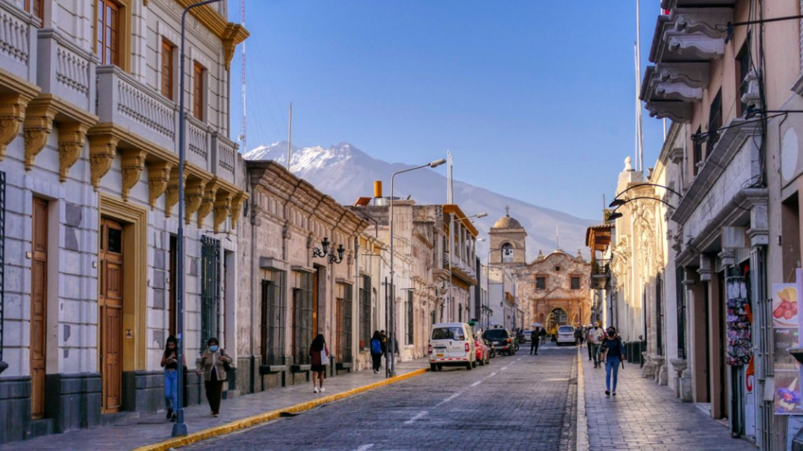

Tour Ciudad de Arequipa

La famosa Ciudad Blanca de Perú
Magnífica arquitectura colonial y catedrales en la famosa Ciudad Blanca de Perú
Detalle
Nuestro programa guiado comienza cuando tu guía te recoge en tu hotel. Primero visitaremos uno de los edificios más notables de Arequipa, el Monasterio de Santa Catalina, un hermoso monasterio en Arequipa que ha perdurado por siglos. Más tarde caminaremos por la plaza principal de Arequipa, un lugar agradable rodeado de edificios coloniales. En la plaza principal visitaremos los interiores de la magnífica Catedral de Arequipa. Posteriormente visitaremos el museo de Santuarios Andinos, donde veremos a la Momia llamada Juanita, un asombroso cuerpo congelado de una niña encontrada en las frías laderas de la montaña Ampato.
Incluye:
- Recojo de tu hotel en Arequipa
- Visita al Monasterio de Santa Catalina
- Visita a los edificios coloniales que rodean la plaza principal de Arequipa
- Visita a la Catedral de Arequipa
- Visita al museo de Santuarios Andinos
- Todas las entradas.
- Guía profesional de habla inglesa/hispana.
No Incluye:
- Extras y propinas.